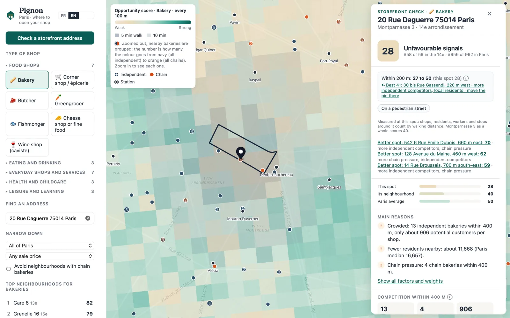
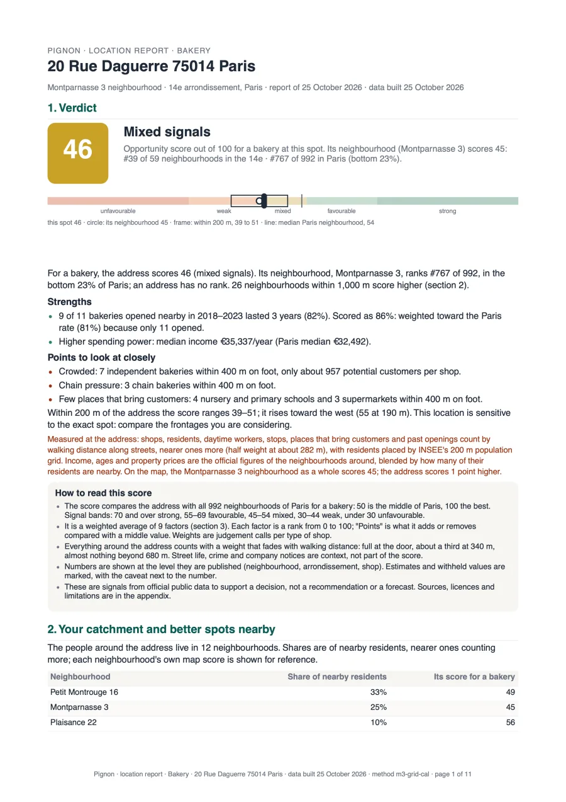

Where demand outweighs supply
How many competitors within a 5-minute walk, and how many potential customers each: residents and daytime workers.
For opening a shop in Paris
Found a storefront? Check it before you sign. Pignon scores the address for your type of shop, explains every number and gives you a report your banker can read.
Official public data only · 29 types of shop · all of Paris

The data already exists: INSEE, the business register, property sales, transport. It is just scattered and unreadable. Pignon brings it together and explains it.
How many competitors within a 5-minute walk, and how many potential customers each: residents and daytime workers.
A Paul or a Monoprix does not weigh like an independent shop. Pignon tells them apart, on the map and in the score.
How many shops of the same trade opened here, how many lasted three years, and why the others closed.
A few census and civil-registry figures that Pignon follows neighbourhood by neighbourhood, and puts in every report.
of Paris households have no car: a strong sign for neighbourhood shops.
of employed Parisians walk or cycle to work, up from 15% in 2017.
fewer births in Paris between 2015 and 2025: family demand is moving.
fewer residents between 2017 and 2022, with big differences from one neighbourhood to the next.
Sources: INSEE, 2017, 2022 and 2023 censuses; civil registry 2015 and 2025. Pignon calculations.
Bakery, café, pharmacy, florist, hairdresser… 29 types in 5 families.
A score out of 100, compared with the neighbourhood and Paris, with the three reasons that weigh most and the number behind each.
The map is scored street by street, every 100 m. Pignon points out better-placed shopfronts a few minutes away and what they gain.
A PDF of about eight pages for your bank file or your CCI advisor, with the method and every source.

For one address and one type of shop. Built to attach to a business plan: every number has its source, every estimate is flagged.
A real example: a bakery at 20 rue Daguerre, Paris 14th, October 2026 data.
The source list is a selling point, not a footnote. Every number in Pignon points to its publisher and its date.
Licence Ouverte 2.0 (Etalab) and ODbL, with attribution. Community data (OpenStreetMap) is labelled as such.
No score without its reasons. If a number cannot be explained, it is not shown.
Pignon informs your decision. It never tells you to sign.
Crime is published per arrondissement, so it is shown per arrondissement. Estimates are flagged.
Hosted in France: the app and its data run on servers in Paris. Pignon does not keep the addresses you check.
And a new type in a day: each one is a plain configuration file.
Free
€49 per address, one-off
Indicative price before launch. No subscription.
No. Pignon is a decision-support tool: it shows indicators from public data and the method that combines them. The decision stays yours, with your banker, your advisor and the landlord.
No, and we say so: no open source publishes commercial rents. Pignon shows property sale prices (DVF), clearly labelled as sale prices.
All of Paris: 20 arrondissements and about 990 neighbourhoods. The main sources are national, so other cities will follow.
Each source has its own rhythm: the business register is refreshed weekly, the census yearly. Each source’s date is shown in the app and in the report.
For founders of independent shops: a first or second shop, often after a career change. CCI and CMA advisors and banks are welcome too.
In France. The app and its database run on servers in Paris, and the address search goes through IGN’s Géoplateforme, the French public service. Pignon does not keep the addresses you check, and no account is needed to explore the map.
Pignon is being tested with founders in Paris. Leave your email: we will write when it opens.